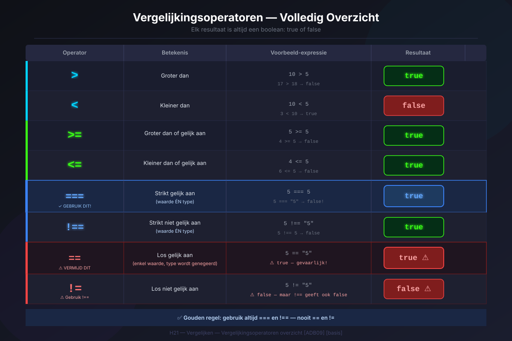
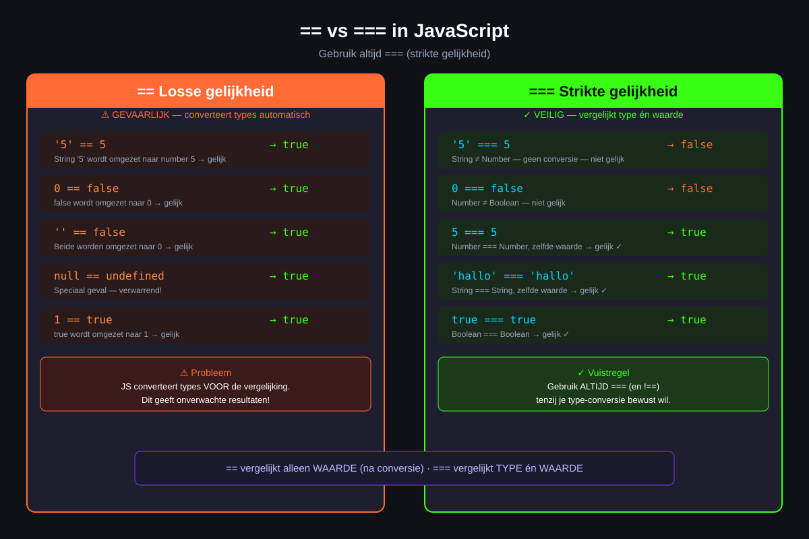
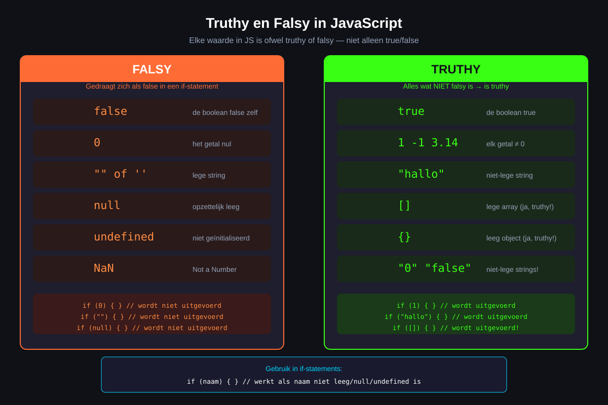
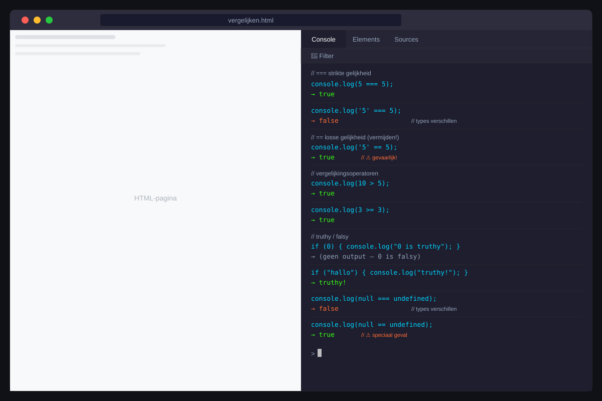

H21 — App-ontwikkeling 5ADB
Vergelijken
ADB09De leerlingen ontwikkelen oplossingen voor concrete problemen.
SV07.09De leerlingen kunnen eigen implementaties testen en debuggen.
🎯 Leerdoelen
- Je kan alle vergelijkingsoperatoren gebruiken — het resultaat is altijd een boolean
- Je kan het cruciale verschil uitleggen tussen
==(losse gelijkheid) en===(strikte gelijkheid) - Je kan uitleggen hoe JavaScript strings alfabetisch vergelijkt
- Je kan de zes falsy waarden opnoemen en het concept truthy/falsy toepassen
- Je kan vergelijkingen schrijven die gebruikt worden in beslissingsstructuren
1. Vergelijkingsoperatoren
Wanneer je twee waarden vergelijkt in JavaScript, is het resultaat altijd een boolean: true of false.
| Operator | Betekenis | Voorbeeld | Resultaat |
|---|---|---|---|
> | Groter dan | 10 > 5 | true |
< | Kleiner dan | 10 < 5 | false |
>= | Groter dan of gelijk aan | 5 >= 5 | true |
<= | Kleiner dan of gelijk aan | 4 <= 5 | true |
=== | Strikt gelijk aan | 5 === "5" | false |
!== | Strikt niet gelijk aan | 5 !== "5" | true |
== | Los gelijk aan | 5 == "5" | true |
!= | Los niet gelijk aan | 5 != "5" | false |
JavaScript
let leeftijd = 17;
console.log(leeftijd > 18); // false
console.log(leeftijd >= 16); // true
console.log(leeftijd < 21); // true
console.log(leeftijd === 17); // true
console.log(leeftijd !== 18); // true
// Resultaat opslaan in een variabele:
let isVolwassen = leeftijd >= 18;
console.log(isVolwassen); // false
console.log(typeof isVolwassen); // "boolean"2. == vs === — het grote verschil
2.1 Losse gelijkheid ==
JavaScript
console.log(5 == "5"); // true — "5" wordt omgezet naar 5
console.log(0 == false); // true — false wordt 0
console.log(0 == ""); // true
console.log(null == undefined); // true2.2 Strikte gelijkheid ===
JavaScript
console.log(5 === "5"); // false — getal ≠ string
console.log(0 === false); // false — getal ≠ boolean
console.log(0 === ""); // false
console.log(null === undefined); // false
❌ Gouden regel
Gebruik altijd === en !==. De losse operatoren == en != zijn er voor backward-compatibiliteit maar worden afgeraden in moderne JavaScript.
3. Strings vergelijken
JavaScript
console.log("appel" < "banaan"); // true — 'a' komt voor 'b'
console.log("zebra" > "aap"); // true — 'z' komt na 'a'
console.log("abc" < "abd"); // true — eerste twee gelijk, 'c' < 'd'
// Let op: hoofdletters komen vóór kleine letters in Unicode!
console.log("Appel" < "appel"); // true — 'A' (code 65) < 'a' (code 97)
// Hoofdletterongevoelig vergelijken:
let woord1 = "Appel";
let woord2 = "appel";
console.log(woord1.toLowerCase() === woord2.toLowerCase()); // true4. Truthy en falsy
In JavaScript is elke waarde ofwel truthy of falsy — niet alleen echte booleans.
4.1 De zes falsy waarden
JavaScript
if (false) { /* nooit */ }
if (0) { /* nooit */ }
if ("") { /* nooit */ }
if (null) { /* nooit */ }
if (undefined) { /* nooit */ }
if (NaN) { /* nooit */ }4.2 Alles anders is truthy
JavaScript
if (1) { console.log("truthy"); } // wordt uitgevoerd
if (-1) { console.log("truthy"); } // negatieve getallen zijn truthy!
if ("hallo") { console.log("truthy"); }
if ("false") { console.log("truthy"); } // de string "false" is truthy!
if ([]) { console.log("truthy"); } // lege array is truthy
if ({}) { console.log("truthy"); } // leeg object is truthy
5. Logische operatoren
| Operator | Naam | Wat het doet | Voorbeeld |
|---|---|---|---|
&& | EN | Beide moeten true zijn | a > 0 && b > 0 |
|| | OF | Minstens één moet true zijn | a > 0 || b > 0 |
! | NIET | Keert de boolean om | !isActief |
JavaScript
let leeftijd = 17;
let heeftToestemming = true;
console.log(leeftijd >= 18 && heeftToestemming); // false
console.log(leeftijd >= 16 || heeftToestemming); // true
let isMinderjarig = leeftijd < 18;
console.log(!isMinderjarig); // false
Oefeningen
ADB09 / SV07.09
Oefening 1 — Twee getallen vergelijken
Maak een bestand vergelijken.html met een script dat:
- Twee getallen opvraagt via
prompt()en omzet metNumber() - Controleert of de invoer geldig is (
isNaN) - Het grootste getal toont
- Toont of de getallen gelijk zijn, of het eerste groter is, of het tweede groter is
- Toont of beide getallen positief, negatief of gemengd zijn

Huistaak
📋 Huistaak — Vergelijken
Opdracht: Inlogcontrole
- Deel 1 — Invoer (3 punten): Vraag via
prompt()een gebruikersnaam en wachtwoord. Sla de verwachte correcte waarden op inconst-variabelen. - Deel 2 — Strikte vergelijking (4 punten): Gebruik
===om de ingevoerde waarden te vergelijken met de correcte waarden. Toon "Welkom, [naam]!" of "Onjuiste gegevens." op basis van het resultaat. - Deel 3 — Truthy/falsy (3 punten): Controleer of de invoer niet leeg is vóór je vergelijkt. Gebruik de truthy/falsy-eigenschap van strings (lege string is falsy). Toon een gepaste melding als de gebruiker niets ingevuld heeft.
Vragenlijst
Controleer of je de leerstof van dit hoofdstuk begrijpt.
Quiz
H21 — Vergelijken
Vraag 1
Welk type geeft een vergelijking altijd terug?
Vraag 2
Wat is het resultaat van 5 === "5"?
Vraag 3
Welke operator moet je altijd gebruiken voor gelijkheidsvergelijkingen?
Vraag 4
Welke van deze waarden is truthy?
Vraag 5
Wat doet de && operator?
Vraag 6
Hoe vergelijk je strings op een hoofdletterongevoelige manier?